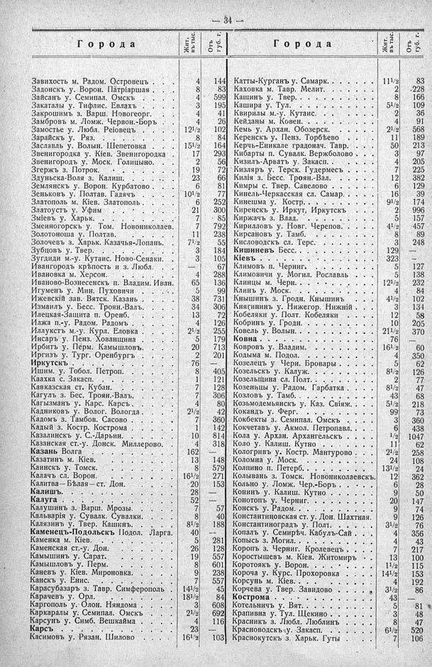

Лист источника 80
Скан

Распознанный текст
— 34 —
Города Жит. въ тыс. Отъ губ. г.
Города Жит. въ тыс. Отъ губ. г.
Завихостъ м. Радом. Островецъ . . . . 4 144
Задонскъ у. Ворон. Патріаршая . . . . 8 83
Зайсанъ у. Семипал. Омскъ . . . . . 4 599
Закаталы у. Тифлис. Евлахъ . . . . . 3 195
Закрошимъ з. Варш. Новогеорг. . . . 4 41
Замбровъ м. Ломж. Червон.-Боръ . . . 4 26
Замостье у. Любл. Реіовецъ . . . . . 12 1/2 102
Зарайскъ у. Ряз. . . . . . . . . . . 8 84
Заславль у. Волын. Шепетовка . . . . 15 1/2 164
Звенигородка у. Кіев. Звенигородка . . 17 293
Звенигородъ у. Моск. Голицыно. . . . 2 56
Згержъ з. Потрок. . . . . . . . . . 19 72
Здуньска-Воля з. Калиш. . . . . . . 23 66
Землянскъ у. Ворон. Курбатово . . . . 6 81
Зеньковъ у. Полтав. Гадячъ . . . . . 10 1/2 77
Златополь м. Кіев. Златополь . . . . . 6 252
Златоустъ у. Уфим . . . . . . . . . 21 300
Зміевъ у. Харьк. . . . . . . . . . . 7 85
Змеиногорскъ у. Том. Новониколаев. . 7 792
Золотоноша у. Полтав. . . . . . . . 11 238
Золочевъ з. Харьк. Казачья-Лопань. . . 7 1/2 55
Зубцовъ у. Твер. . . . . . . . . . . 3 184
Зугдиди м.-у. Кутаис. Ново-Сенаки. . . 3 105
Ивангородъ крѣпость и з. Любл. . . . — 67
Ивановка м. Херсон. . . . . . . . . 4 288
Иваново-Вознесенскъ п. Владим. Иван. 65 136
Игуменъ у. Мин. Пуховичи . . . . . 5 99
Ижевскій зав. Вятск. Казань . . . . . 38 731
Измаилъ у. Бесс. Троян.-Валъ. . . . . 34 306
Илецкая-Защита п. Оренб. . . . . . . 13 72
Илжа п.-у. Радом. Радомъ . . . . . . 4 126
Иллукстъ м.-у. Курл. Еловка . . . . . 2 1/2 255
Инсаръ у. Пенз. Хованщина . . . . . 5 179
Ирбитъ у. Перм. Камышловъ. . . . . . 20 713
Иргизъ у. Тург. Оренбургъ . . . . . . 2 201
Иркутскъ . . . . . . . . . . . . . 76 —
Ишим. у. Тобол. Петроп. . . . . . . 8 405
Каахка с. Закасп. . . . . . . . . . 1 121
Кавказская ст. Кубан. . . . . . . . 7 128
Кагулъ з. Бес. Троян.-Валъ. . . . . . 7 306
Кагызманъ у. Карс. Карсъ . . . . . . 4 80
Кадниковъ у. Волог. Вологда . . . . . 2 1/2 42
Кадомъ з. Тамбов. Сасово . . . . . . 7 360
Кадый з. Костр. Кострома . . . . . . 1 142
Казалинскъ у. С.-Дарьин. . . . . . . 10 814
Казанская ст.-у. Донск. Миллерово. . . 4 318
Казань Волга . . . . . . . . . . . 162 —
Казатинъ м. Кіев. . . . . . . . . . 13 148
Каинскъ у. Томск. . . . . . . . . . 8 579
Калачъ сл. Ворон. . . . . . . . . . 16 1/2 271
Калитва—Бѣлая—ст. Дон. . . . . . . . 20 153
Калишъ. . . . . . . . . . . . . . 28 —
Калуга . . . . . . . . . . . . . . 52 —
Калушинъ з. Варш. Мрозы. . . . . . 7 57
Кальварія у. Сувалк. Сувалки. . . . . 8 40
Калязинъ у. Твер. Кашинъ. . . . . . 8 1/2 188
Каменецъ-Подольскъ Подол. Ларга. . 40 --
Каменка м. Кіев. . . . . . . . . . . 5 281
Каменская ст.-у. Дон. . . . . . . . 26 128
Камышинъ у. Сарат. . . . . . . . . 19 557
Камышловъ у. Перм. . . . . . . . . 8 601
Каневъ у. Кіев. Мироновка. . . . . . 9 238
Канскъ у. Енис. . . . . . . . . . . 7 557
Карасубазаръ з. Тавр. Симферополь . 14 1/2 45
Карачевъ у. Орл. . . . . . . . . . . 18 1/2 84
Каргополь у. Олон. Няндома . . . . . 3 608
Каркаралы у: Семипал. Омскъ . . . . 2 1/2 692
Карсунъ у. Симб. Вешкайма . . . . . 4 116
Карсъ . . . . . . . . . . . . . . 23 —
Касимовъ у. Рязан. Шилово . . . . . 16 1/2 103
Катты-Курганъ у. Самарк. . . . . . . 11 1/2 83
Каховка м. Тавр. Мелит. . . . . . . 2 .228
Кашинъ у. Твер. . . . . . . . . . . 8 166
Кашира у. Тул. . . . . . . . . . . . 5 1/2 109
Квирилы м.-у. Кутаис. . . . . . . . 2 36
Кейданы м. Ковен. . . . . . . . . . 4 91
Кемь у. Архан. Обозерск. . . . . . . 2 1/2 568
Керенскъ у. Пенз. Торбѣево . . . . . 11 189
Керчь-Еникале градонач. Тавр. . . . . 50 213
Кибарты п. Сувалк. Вержболово . . . . 3 97
Кизилъ-Арватъ у. Закасп. . . . . . . 4 205
Кизляръ у. Терск. Гудермесъ . . . . 7 225
Килія з. Бесс. Троян.-Вал. . . . . . 12 382
Кимры с. Твер. Савелово . . . . . . 6 129
Кинель-Черкасская сл. Самар. . . . . 16 39
Кинешма у. Костр. . . . . . . . . . 9 1/2 174
Киренскъ у. Иркут, Иркутскъ . . . . 2 996
Киржачъ з. Влад. . . . . . . . . . . 5 157
Кирилловъ у. Новг. Черепов. . . . . 4 1/2 457
Кирсановъ у. Тамб. . . . . . . . . . 8 89
Кисловодскъ сл. Терс. . . . . . . . 3 248
Кишиневъ Бесс. . . . . . . . . . . 129 —
Кіевъ . . . . . . . . . . . . . . . 323 —
Климовъ п. Черниг. . . . . . . . . . 5 127
Климовичи у. Могил. Рославль . . . . 5 138
Клинцы м. Черн. . . . . . . . . . . 12 1/2 232
Клинъ у. Моск. . . . . . . . . . . . 4 84
Кнышинъ з. Гродн. Кнышинъ . . . . . 4 1/2 102
Княгининъ у. Нижегор. Нижній . . . . 3 134
Кобеляки у. Полт. Кобеляки . . . . . 12 58
Кобринъ у. Гродн. . . . . . . . . . 10 205
Ковель у. Волын. . . . . . . . . . . 21 1/2 370
Ковна . . . . . . . . . . . . . . . 76 —
Ковровъ у. Владим. . . . . . . . . . 16 1/2 60
Кодыма м. Подол. . . . . . . . . . . 4 350
Козелецъ у Черн. Бровары . . . . . . 5 62
Козельскъ у. Калуж. . . . . . . . . 8 1/2 126
Козельщина сл. Полт. . . . . . . . . 2 77
Козеницы у. Радом. Гарбатка . . . . 8 1/2 47
Козловъ у. Тамб. . . . . . . . . . . 43 68
Козьмодемьянскъ у. Каз. Свіяж. . . . 5 1/2 218
Кокандъ у. Ферг. . . . . . . . . . . 99 73
Кокбекты з. Семипал. Омскъ . . . . . 3 360
Кокчетавъ у. Акмол. Петропавл. . . . 6 438
Кола у. Архан. Архангельскъ . . . . 1/2 1047
Коло у. Калиш. Кутно . . . . . . . 11 62
Кологривъ у. Костр. Мантурово . . . 2 1/2 258
Коломна у. Моск. . . . . . . . . . . 24 108
Колпино п. Петерб. . . . . . . . . . 13 1/2 24
Колывань з. Томск. Новониколаевскъ. 12 362
Кольно у. Ломж. Чер.-Боръ . . . . . 6 28
Конинъ у. Калиш. Кутно . . . . . . . 9 50
Конотопъ у. Черниг. . . . . . . . . 20 147
Конскъ у. Радом. . . . . . . . . . . 9 74
Константиновская ст. у. Дон. Шахтная. 9 126
Константиноградъ у. Полт. . . . . . 3 1/2 76
Копалъ у. Семирѣч. Кабулъ-Сай . . . . 4 356
Копысь з. Могил. . . . . . . . . . . 4 43
Коропъ з. Черниг. Кролевецъ . . . . . 7 217
Коростышевъ м. Кіев. Житомиръ . . . 13 100
Коротоякъ у. Ворон. . . . . . . . . 11 1/2 115
Короча у. Курс. Прохоровка . . . . . 14 1/2 153
Корсунь м. Кіев. . . . . . . . . . . 4 192
Корчева у. Твер. Завидово . . . . . 3 1/2 86
Кострома . . . . . . . . . . . . . . 43 —
Котельничъ у. Вят. . . . . . . . . . 5 81
Крапивна у. Тул. Щекино . . . . . . 3 48
Красникъ з. Любл. Люблинъ . . . . . 8 47
Красноводскъ у. Закасп. . . . . . . 6 1/2 520
Краснокутскъ з. Харьк. Гуты . . . . 7 106